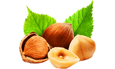

Hordeum Forte la clave de la salud masculina
Una cápsula de Hordeum Forte
La fuerza de la cebada
Energía sexual masculina infalible

Las propiedades de mejora de la salud de este cereal se conocen desde la época de los antiguos romanos y egipcios. En el siglo XVIII, ninguna tintura médica podía prescindir de granos germinados y triturados de cebada. Los curanderos explicaban esto por el hecho de que estos granos producen un efecto beneficioso en el organismo masculino: sacian, dan vitalidad, restablecen el equilibrio hormonal y tratan las enfermedades genitourinarias.
Ingredientes reales Resultados reales


El extracto de los granos germinados
de cebada alivia los síntomas de dolor en la región de la ingle y el perineo y facilita la micción en solo 3 horas.
- 
La biotina
elimina la inflamación de la próstata y restablece los niveles de testosterona

La vitamina E
elimina los procesos infecciosos e inflamatorios y restaura las defensas del cuerpo

La vitamina B
aumenta la cantidad de semen y la actividad de los espermatozoides

La fibra
absorbe y elimina las toxinas del cuerpo y los venenos que suprimen la inmunidad

Hordeum Forte — resultados garantizados sin efectos secundarios

Hordeum Forte cuida la salud de los hombres

La acción de Hordeum Forte en la prostatitis crónica se basa en la normalización del flujo sanguíneo en la próstata, reduciendo el edema y la inflamación. Desde los primeros días del tratamiento de la prostatitis, Hordeum Forte conduce al alivio de los síntomas. Este fármaco actúa directamente y no tiene efectos secundarios

Está demostrado que Hordeum Forte no produce un impacto negativo en las funciones sexuales y reproductivas, lo cual es importante para cualquier hombre moderno.
Los estudios clínicos han demostrado que Hordeum Forte no solo tiene un efecto antiinflamatorio eficaz, sino que también aumenta la eficacia de los antibióticos y afecta positivamente a la espermatogénesis.
El uso de este fármaco a largo plazo no tiene efectos negativos y no produce adicción.
El tratamiento con Hordeum Forte permite a los pacientes llevar un estilo de vida activo.


Qué dicen los expertos
La prostatitis es una enfermedad bastante grave que debe tratarse de inmediato. Al principio, los síntomas pueden pasar desapercibidos, pero la enfermedad está a la vuelta de la esquina. Actualmente, es posible revertir la enfermedad con más éxito y de forma más fácil. Por lo tanto, lo principal en el tratamiento es no saltarse la etapa inicial, de lo contrario, las consecuencias pueden ser irreversibles:
Disfunción sexual e infertilidad

Adenoma de la próstata

Tumores oncológicos
Para evitar tales complicaciones, recomiendo Hordeum Forte a todos mis clientes. En base a mi propia práctica médica, he llegado a la conclusión de que solo este complejo produce una mejora significativa. El fármaco comienza a actuar durante las primeras horas y, día tras día, restaura la próstata hasta un estado saludable.
La composición de Hordeum Forte hace posible su uso con fines preventivos. Gracias a sus componentes, previene los fenómenos de estancamiento y afecta positivamente al suministro de sangre de la próstata y la salida de secreción de la glándula. Por lo tanto, la prevención con Hordeum Forte reduce significativamente la probabilidad de inflamación de la próstata.
¡Con Hordeum Forte seguro que podrás!

Alejandro Ardoy
experto en el campo de la salud masculina
Hordeum Forte aliviará los síntomas de la prostatitis más rápido que los métodos tradicionales
Preguntas frecuentes
Este fármaco se recomienda en caso de inflamación de la próstata. Además, Hordeum Forte alivia los efectos de la prostatitis crónica y restaura la salud masculina. Dado que este medicamento es completamente natural, no hay restricción de edad.
Toma una cápsula 3 veces al día durante el tratamiento.
La alta eficacia del fitocomplejo Hordeum Forte se debe a una fórmula especial sin antibióticos que afecta positivamente al cuerpo.
Los componentes vegetales, incluidos en la composición de las cápsulas, tienen un efecto antimicrobiano. Además, eliminan el proceso inflamatorio que conduce a la restauración del funcionamiento completo del aparato reproductor.
Los componentes activos de este fármaco restauran la producción de la hormona masculina, la testosterona, y activan la circulación sanguínea en el área genital. Hordeum Forte mejora el flujo de sangre al pene, lo que proporciona una erección firme y prolongada.
¡Solo tú decides cuándo eyacular!
¿No has encontrado tu pregunta?
Nuestros especialistas están listos para asesorarte en el momento más cómodo para ti
Ellos ya han derrotado a la prostatitis

Ismael, 48 años
Empecé a sentir un dolor agudo en el perineo y la parte baja de la espalda. Luego, vi coágulos de sangre en el semen, así que fui corriendo al urólogo. Resultó ser que tenía PROSTATITIS. Pensé que mi vida había terminado y me pasé medio año bebiendo sin esperanza. Debo las gracias a mi amigo que me detuvo a tiempo y encontró estas cápsulas. He vuelto a nacer. Me siento genial.
Аndrés, 37 años
Chicos, ¡no dejéis el problema para después! De lo contrario, pasaréis por los nueve círculos del infierno como yo. Cada año tenía que someterme a un tratamiento con masaje y antibióticos – todo eso duró 5 años y solo así pude aliviar las molestias. Gracias a Dios, después del tratamiento con Hordeum Forte, se me pasó todo. ¡Por fin han inventado un fármaco realmente eficaz!

Alex, 52 años
hace 8 horas
Hace un par de meses, comencé a sentir un dolor agudo en el escroto. Sabía lo que estaba sucediendo, pero no quería ir al médico. Aguantaba el dolor. Qué idiota había sido. El médico, en lugar de prescribirme un tratamiento, me dijo que tenía que operarme. Aparecieron canas en dos días. Fui a otro médico que me recetó tomar Hordeum Forte. Completé el tratamiento y ahora no me molesta nada.
Hordeum Forte tu oportunidad de cambiar la vida para mejor 100% victoria sobre la prostatitis
-50%